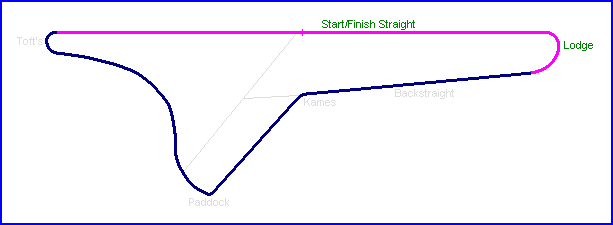
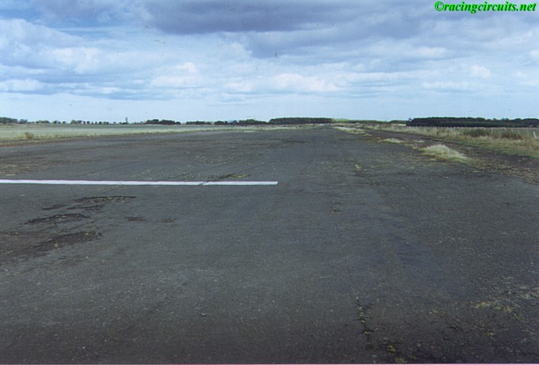
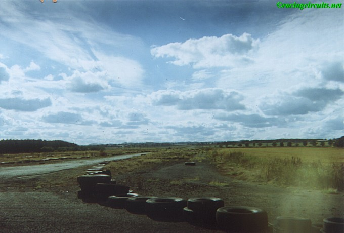
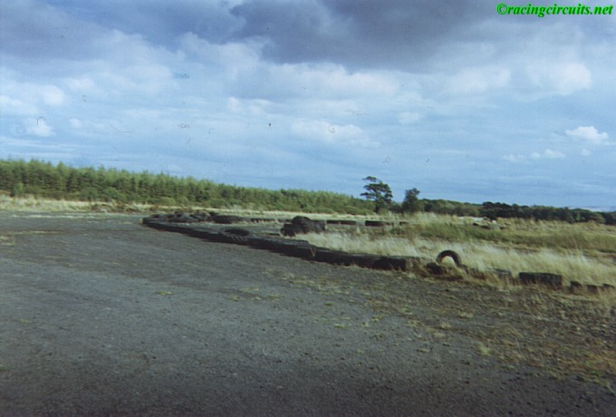
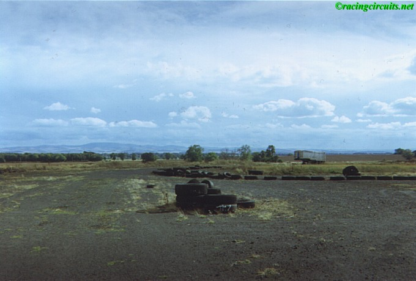
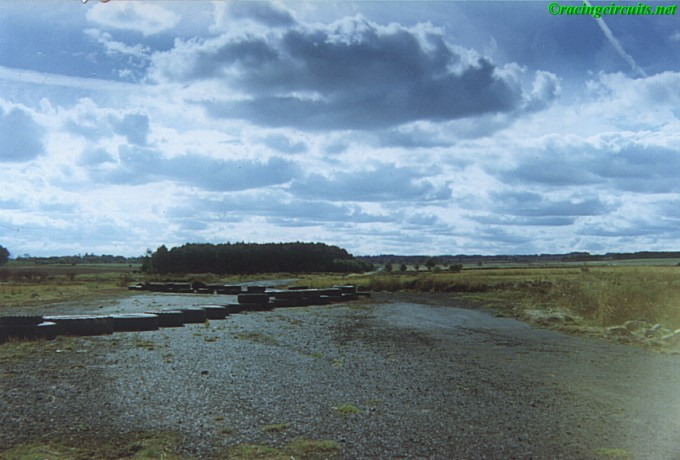

Charterhall - Start/Finish Straight & Lodge Corner
|| Contents | Start/Finish Straight & Lodge | Backstraight & Kames | Paddock Bend & Toft's Turn || Home ||
Click on corner names above to view photographs of that section.


Looking down the runway from Toft's Turn. This was the beginning of the Start/Finish
straight

Looking back down the Start/Finish straight from the entrance of Lodge corner.

The entry to Lodge corner.

The apex of Lodge corner.

The exit of Lodge, leading onto the backstraight up to Kames. Tyres left behind from the
Charterhall Stages Rally
©racingcircuits.net - All rights reserved.